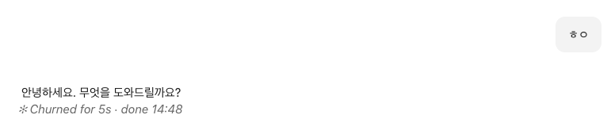
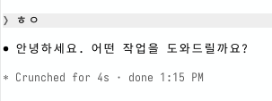

Hi
Hello. How can I help you today?
✻ Worked for 1s · done 2:48 PM
TurnDuration for Claude
Shows how long each answer took, under the answer, in Claude Desktop
The Claude Code CLI has this line built in; Claude Desktop does not, so this mod draws it.
Install
At the Claude Code terminal prompt:
/plugin install turn-duration --marketplace M1nu0x0/claude-turn-durationAnswer y to Add marketplace? and choose the user scope.
From a shell:
claude plugin install turn-duration --marketplace M1nu0x0/claude-turn-durationIn Claude Desktop, click + next to the prompt box → Plugins → Add marketplace, enter M1nu0x0/claude-turn-duration, then add turn-duration.
Screens


How it works
When the main turn ends, it prints a ✻ word for duration · done time line. Subagent turns and empty answers get no line.
Clock format
At session start it reads the OS's 12/24-hour setting and locale to format the time.
- macOS
AppleICUForce24HourTime,AppleICUForce12HourTimeandAppleLocalefromdefaults read -g- Windows
sShortTimeandLocaleNameunderHKCU\Control Panel\International- Linux
- The locale from
LC_ALL,LC_TIME, thenLANG; 12/24-hour fromclock-formaton a GNOME desktop.
Questions
Does the line show twice in the terminal?
The ✻ … for Ns line in the terminal is not from this mod; it is the TurnDuration line Claude Code draws on its own. The mod is blocked in code from adding a line in the terminal, so it never shows twice.
Where does it show?
Beneath answers on surfaces other than the terminal, such as Claude Desktop. Summary blocks are left as they are.
Does it send data anywhere?
No. At session start it only runs the commands that read the OS clock settings (defaults, reg, gsettings) on your own computer.
Which systems is it tested on?
CI runs on Ubuntu, Windows and macOS.
How do I remove it?
Run claude plugin uninstall turn-duration in a shell.